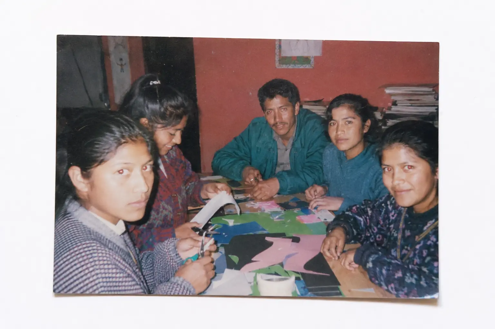

Sobre nosotros
|
TiendArte nació en Guatemala en 1991 como el sueño de una familia apasionada por el arte y las manualidades. Todo comenzó en casa, entre pinturas, papeles, pinceles y momentos creativos compartidos. Con mucha ilusión, abrimos una pequeña tienda con pocos materiales, pero con un gran propósito: acercar el arte a más personas y ayudarles a transformar sus ideas en creaciones. Con el tiempo, fuimos creciendo gracias a la confianza de artistas, estudiantes y amantes de las manualidades. Hoy seguimos trabajando con la misma pasión del inicio, ofreciendo productos que inspiran a crear, experimentar y expresar la imaginación. |
 |